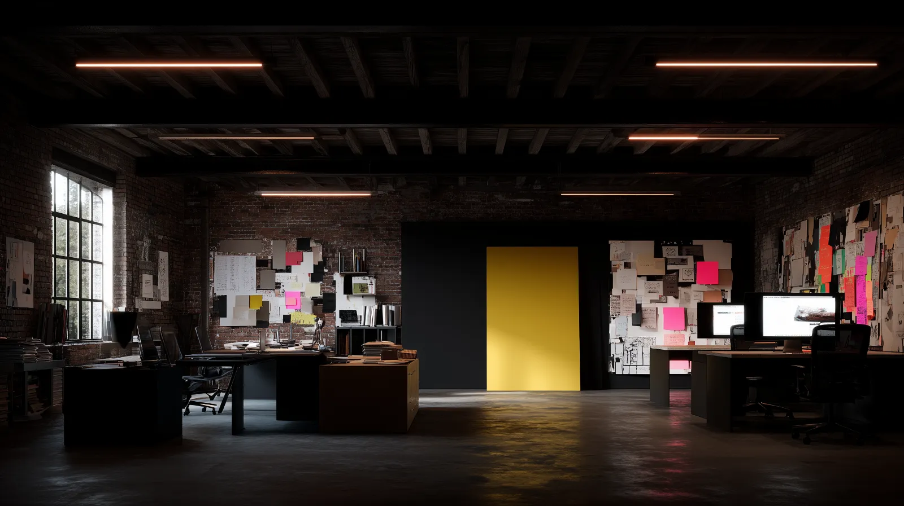

Transparent white lettering adapts dynamically over light & dark imagery.
Design
System
24
Animated Components12
Color & Surface Tokens60fps
Cubic-Bezier MotionTypography
Editorial precision anchored by Inter, paired with Space Grotesk for display accents and JetBrains Mono for telemetry.
'Inter', -apple-system, BlinkMacSystemFont, 'Segoe UI', Roboto, sans-serif
'JetBrains Mono', ui-monospace, SFMono-Regular, Menlo, monospace
Served locally via bundled css2_*.css & .woff2 subsets for zero-latency rendering and offline resilience.
Digital Architect
Design & Strategy
Case Studies & Systems
Interactive Component Primitives
Modular Grid & Motion Tokens
Core Competencies & Specs
Thoughts on the intersection of design, technology, and human psychology. Exploring how we can build better tools for thought.
Consistent 16px editorial body copy designed for high legibility across light surfaces with WCAG AAA ink contrast.
Secondary descriptions, card summaries, and structured metadata panels.
Colors & Surfaces
Opacity Variants (Ink & Glass)
Contextual usage: 100% primary ink, 80% hover fills, 40% grid lines, 10% disabled/badges, 5% flashlight radial glow.
Gradient Participation
Animated Components
Buttons
Combines editorial pill/rectangular buttons with the rotating conic-gradient shimmer beam, kinetic SVG corner brackets, and stateful download morphing.
Inputs & Controls
High-clarity form primitives with group-focus-within icon transitions, peer-checked mechanical toggles, and animated drop zones.
Cards
Editorial split cards with grayscale-to-color image reveals, cursor-tracking .flashlight-card radial highlights, and an interactive 3D card stack switcher.
Nova Finance
Editorial split card with parent-triggered title shift & color reveal.

Cursor Radial Light
Tracks --mouse-x & --mouse-y.
Badges, Tooltips & Modals
12-Col Grid, Parallax Strip & SVG Dividers



Iconography
Motion & Physics
Scroll Reveal
1000ms • cubic-bezier(0.16, 1, 0.3, 1)
Staggered Entrance
+200ms stagger offset
Deep Cascade
+500ms stagger offset